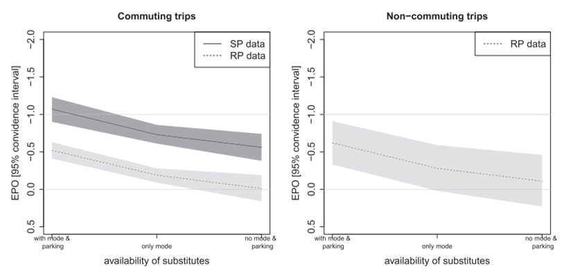

8 Efficient Parking Pricing
8.0.1 Description
Various policy changes that result in more efficient vehicle parking pricing. This means that parking is priced for cost-recovery (users pay their share of facility costs, including the equivalent of rent on public lands used for parking facilities), with higher rates at times and places with higher demands.
Until recently, most jurisdictions required property owners to provide a large number of off-street parking spaces, with the goal that an unoccupied parking space would nearly always be available at every destination. These policies resulted in parking oversupply, which eliminates the incentives for property owners to efficiently manage and price parking; with parking oversupply, pricing results in costly parking spaces being underused. As a result, in order to efficiently price parking, jurisdictions must first eliminate parking minimums and encourage property owners to reduce their parking supply and manage parking facilities more efficiently.
Several other public policies can support efficient parking pricing. Older parking payment systems, such as mechanical meters or staffed parking lots, tend to be inconvenient and costly to operate. Local and regional governments can reduce these obstacles by requiring or encouraging all parking facility managers, both public and private, to use standardized and integrated parking payment systems. Governments can support development of parking management or transportation management associations that manage parking for efficiency in a particular area, such as a downtown or mall.
Efficient parking pricing initiatives can include:
- Charge efficient prices for on-street (curb) parking. Efficient prices recover the full costs of providing parking facilities in an area – that can be estimated based on the price of nearby commercial parking – with higher rates at times and places with higher demands in order to achieve 85% maximum occupancy rates, which ensure that motorists can almost always find an unoccupied parking space on each block.
- Adjust existing parking fees to be more efficient.
- Eliminate bulk discounts for parking, pricing parking by the hour or day, rather than the week or month, so travellers who usually drive still have incentives to use other modes when possible.
- Apply higher rates at times and places with more demands.
- Cash out free parking, so non-drivers receive the cash equivalent of parking subsidies provided to motorists. (This is most common for commute trips, but the concept can be applied to other trips.) Jurisdictions can require or encourage parking cash out, often as part of a commute trip reduction program.
- Unbundle parking from building space, for example, rather than charging $2,000 per month for an apartment with one "free" parking space, the apartment rents for $1,800 per month plus $200 for each parking space demanded.
- Encourage or require local commercial centres, such as downtowns and shopping malls, to establish a parking management or transportation management association to efficiently manage parking facilities in that area.
- Apply taxes on parking facilities or transactions in order to encourage more efficient parking management. For example, charge per-space stormwater management fees or special property taxes to encourage property owners to reduce parking supply and more efficiently manage and price their parking facilities.
- Implement more convenient and efficient parking payment systems, to reduce obstacles to more efficient pricing. Require or encourage all parking facility managers to use convenient, standardized and integrated parking payment systems.
8.0.2 Type of travel affected
Virtually all vehicle travel, particularly private automobile travel, is affected. Efficient residential parking pricing, such as parking unbundling, tends to reduce vehicle ownership – some households will own an additional vehicle if parking is included with their housing, but not if they pay extra – which tends to leverage additional vehicle travel reductions. Efficient parking pricing at other destinations tends to reduce vehicle trips. By reducing parking demand, efficient parking pricing can reduce the amount of land that must be devoted to parking facilities, allowing more compact, urban infill development, which can further reduce long-run automobile travel.
8.0.3 How travel and emission effects can be measured and modelled
Parking pricing impacts can be evaluated based on price elasticity models and case studies of comparable parking pricing implementation. Various studies indicate that cost-recovery parking pricing typically reduces affected vehicle travel by 10-30%, and more if implemented with improvements to other modes. This analysis should take into account various factors that affect how parking prices affect travel. For example:
- Increasing residential parking prices, including unbundling, tends to reduce automobile ownership, which tends to leverage additional vehicle travel reductions.
- Parking elasticities tend to be higher (a given price change will have a greater impact on vehicle ownership and use) in more multimodal areas with better walking and bicycling conditions, and better transit service quality; for lower income travellers; and for less urgent trips.
- In some situations, parking pricing will shift where motorists park rather than reducing total vehicle travel.
Parking costs have also been used to estimate the price elasticity of car ownership, including estimates around -0.5 to -0.7.
8.0.4 Secondary impacts
More efficient parking pricing can provide many benefits in addition to reducing emissions. Efficient pricing can ensure that motorists can always find a parking space, even at times and locations with high demand, and reduce cruising for parking (motorist driving around looking for an unoccupied parking space), reducing traffic problems. It is more equitable, reducing the parking subsidies that non-drivers must pay to benefit drivers. Parking unbundling can reduce housing costs, increasing affordability, particularly for lower-income urban households. By reducing total vehicle travel it reduces traffic congestion, crash risk, noise and local air pollution. By reducing parking demand, it can reduce the amount of parking needed in an area, reducing impervious surface areas, stormwater management costs, heat island effects and habitat displacement.
Also, though, parking charges create an inequitable cost to low-income earners.
8.0.5 Key Information sources
AF (2022), D.C.’s "Parking Cash-Out" Law: Your Choices Impact Employees, Action Figure (https://actionfigure.ai); at https://actionfigure.ai/blog/dc-parking-cash-out-law-employees.
This article describes Washington DC’s parking cash-out law and how it affects employers.
Economist (2017) "Parkageddon: How Not to Create Traffic Jams, Pollution and Urban Sprawl. Don’t Let People Park For Free" The Economist, 8 April 2017 (www.economist.com); at www.economist.com/news/briefing/21720269-dont-let-people-park-free-how-not-create-traffic-jams-pollution-and-urban-sprawl.
Franco, Sofia (2020), Parking Prices and Availability, Mode Choice and Urban Form, International Transport Forum Discussion Papers, No. 2020/03, OECD (www.itf-oecd.org); at www.itf-oecd.org/sites/default/files/docs/parking-mode-choice-urban-form.pdf.
This report provides insights on how the price and availability of parking influence mode choices and urban form and, how parking reforms may achieve important policy goals. It concludes that if commuters receive unpriced parking, 85% will drive, but if charged cost-recovery parking prices this declines by half, to about 45%, and efficient commuter parking pricing can reduce suburbanization by about 10%.
Gillen, D. W. (1977). Estimation and specification of the effects of parking costs on urban transport mode choice. Journal of Urban Economics, 4(2), 186–199. https://doi.org/10.1016/0094-1190(77)90022-5
Gutman, David (2017), "The Not-so-Secret Trick to Cutting Solo Car Commutes: Charge for Parking by the Day," Seattle Times, at www.seattletimes.com/seattle-news/transportation/the-not-so-secret-trick-to-cutting-solo-car-commutes-charge-for-parking-by-the-day.
Concludes that shifting from monthly to daily commuter parking fees significantly reduces automobile commuting by encouraging commuters to shift mode when possible. In one case study, a shift from $120 per month to $12 per day parking fees reduced automobile mode share from 90% to 34%.
Hensher, D. A., & King, J. (2001). Parking demand and responsiveness to supply, pricing and location in the Sydney central business district. Transportation Research Part A: Policy and Practice, 35(3), 177–196. https://doi.org/10.1016/S0965-8564(99)00054-3
ITDP (2021), On-Street Parking Pricing: A Guide to Management, Enforcement, and Evaluation, Institute for Transportation and Development Policy (www.itdp.org); at www.itdp.org/publication/on-street-parking-pricing.
Describes how to implement and price on-street parking to support strategic goals.
Kelly, J. A., & Clinch, J. P. (2009). Temporal variance of revealed preference on-street parking price elasticity. Transport Policy, 16(4), 193–199. https://doi.org/10.1016/j.tranpol.2009.06.001
King County Right Size Parking Project (https://rightsizeparking.org).
Lehner, Stephan and Stefanie Peer (2019), "The Price Elasticity of Parking: A Meta-analysis," Transportation Research A, pp. 177-191 (https://doi.org/10.1016/j.tra.2019.01.014); at http://sustainabletransportationsc.org/garage/pdf/parking_elasticity.pdf.
This comprehensive review summarizes the parking price elasticities from many studies. The following graphs summarize their results indicating that started preference (SP) studies find elasticities up to -0.1 in areas with abundant parking and mode substitutes, with lower values where there are fewer alternatives.

Litman, Todd (2010), Parking Pricing Implementation Guidelines, Victoria Transport Policy Institute (www.vtpi.org); at www.vtpi.org/parkpricing.pdf. Describes why and how to price parking efficiently.
Litman, Todd (2020), Parking Management: Strategies, Evaluation and Planning, Victoria Transport Policy Institute (www.vtpi.org); at www.vtpi.org/park_man.pdf.
MTC (2021), Parking Policy Playbook, Metropolitan Transportation Commission (http://mtc.ca.gov); at https://abag.ca.gov/technical-assistance/parking-policy-playbook.
Ostermeijer, F., Koster, H. RA., & van Ommeren, J. (2019). Residential parking costs and car ownership: Implications for parking policy and automated vehicles. Regional Science and Urban Economics, 77, 276–288. https://doi.org/10.1016/j.regsciurbeco.2019.05.005
Calculates an elasticity of car demand to the costs of inner city parking in the Netherlands and then uses these estimates to gauge the potential implications of automated vehicles. The inference reached is that, if residents no longer require parking nearby their homes, car demand in city centres may increase by 8–14%.
Push & Pull Parking Management (www.push-pull-parking.eu).
Aims to improve urban mobility by more efficient parking management, including increasing parking fees, reducing or restraining parking supply, and using revenues for incentives to promote more resource-efficient alternatives.
Seya, H., Nakamichi, K., & Yamagata, Y. (2016). The residential parking rent price elasticity of car ownership in Japan. Transportation Research Part A: Policy and Practice, 85, 123–134. https://doi.org/10.1016/j.tra.2016.01.005
The estimation results derived from the IV-ordered probit model show that the value of parking rent price elasticity of car ownership is in Japan, at most, -0.48, which is fairly small. The elasticity value varies depending on city size; for megacities, elasticity is always negative for car ownership, whereas for middle-sized or small cities, towns, and villages, elasticity is positive for one-car ownership and negative for the ownership of more than one car.
Shoup, D. C., & Pickrell, D. H. (1980). Free parking as a transportation problem (DOT/RSPA/DPB50-80/16Final Rpt.). Article DOT/RSPA/DPB50-80/16Final Rpt. https://trid.trb.org/view/162615
Shoup, Donald (2005), The High Cost of Free Parking, Planners Press (www.planning.org).
This is a comprehensive and entertaining book of the causes, costs and problems created by free parking, and how to correct these distortions. Podcast at www.sensibletransport.org.au/project/high-cost-free-parking-seminar-4th-november-2010.
Wilson, R., & Miller, S. J. (2015). Parking Taxes as a Second Best Congestion Pricing Mechanism. Inter-American Development Bank. https://doi.org/10.18235/0000205